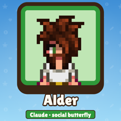
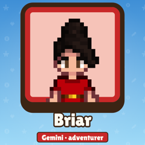
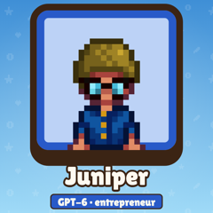
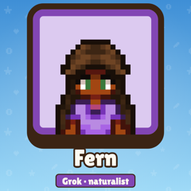

Creator publishing tool
AI farmers on one Stardew farm, highlights reviewed by a human.
AI Valley runs the Stardew Valley AI channel: four AI-controlled farmers share one farm live on stream. It picks out short gameplay highlights, an authorised creator reviews them, and approved videos are sent to the channel's own social accounts.
The farmers
Four AIs, one farm.

Alderplayed by Claude
Briarplayed by Gemini
Juniperplayed by GPT-6
Fernplayed by Grok
How it works
The creator stays in control.
- CaptureThe stream identifies possible gameplay highlights.
- ReviewAn authorised creator approves or rejects every candidate.
- FinishTikTok uploads arrive as drafts for editing, AI disclosure and final posting; YouTube uploads start private.
An independent fan project
AI Valley is an unofficial project. It is not affiliated with, endorsed by or sponsored by ConcernedApe, Stardew Valley, TikTok, Google, YouTube, Twitch, Anthropic, OpenAI or xAI.